Return to previous page | Return to menu | Go to next page
Let's further shape the car.
[Mesh] → [Vertex] → Mouse middle button (Add middle vertex)
Then, hit the points that divide the car into 4 parts on the X axis one after another as shown in the figure below (Figure 3-65). However, please note that the bottom is not divided into four equal parts.
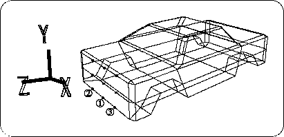
[Mesh] → [Edge] → Left mouse button (Add ONE edge)
Then connect the dots. Finally, it should be as shown in the figure below (Figure 3-66).
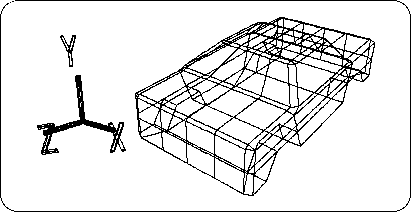
Set all the points enclosed in the figure below to TAG (Figure 3-67). (Enclose with "T" key + left mouse button )
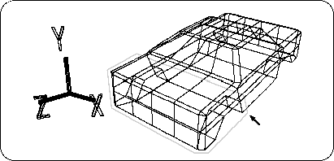
Check that it is in TAG mode, and
Select [TransZ] and move appropriately in the + Z direction (Figure 3-68).
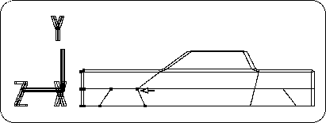
After moving, remove TAG (enclose with "T" key + right mouse button ).
Set the point in the figure below to TAG (Figure 3-69).
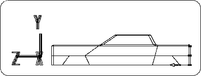
Also check that it is in TAG mode,
Select [TransZ] and move appropriately in the + Z direction (Figure 3-70).
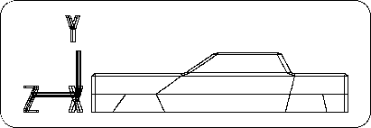
Remove TAG when finished.
Next, on the hood of the car,
[Mesh] → [Vertex] → Mouse middle button (Add middle vertex)
Please hit the middle point (7 places in total). Then connect those points.
[Mesh] → [Edge] → Left mouse button (Add ONE edge)
Including the pentagon prevention as shown below (Figure 3-71).
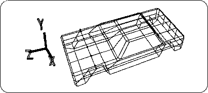
Set all the middle points (12 points) enclosed in the figure below to TAG (enclose with "T" key + left mouse button ) (Figure 3-72).
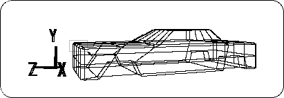
Select [TransY] to move in the -Y direction (Figure 3-73).
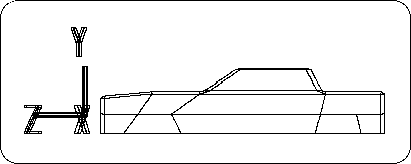
When finished, remove the TAG and set the bonnet center top point (7 points) to TAG (Figure 3-74).
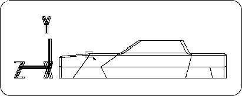
Select [TransY] to move in the -Y direction only slightly (Figure 3-75).
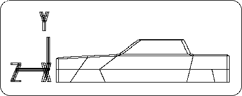
When finished, remove the TAG and change the points in the figure below to TAG (10 points on the front and upper center of the bonnet) (Figure 3-76).
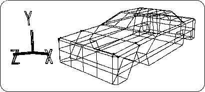
Select [TransY] to move in the -Y direction (Figure 3-77).
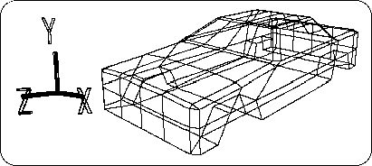
When finished, remove the TAG and set the front center point (12 points) to TAG (Figure 3-78).
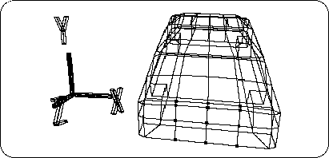
Select [TransZ] and move appropriately in the + Z direction. (Figure 3-79).
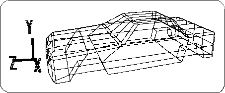
When finished, remove the TAG, and finally change the point in the figure below to TAG (Figure 3-80).
(6 points at the center bottom of the windshield)
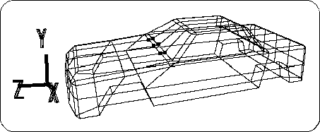
Select [TransZ] and move it appropriately in the + Z direction (Figure 3-81).
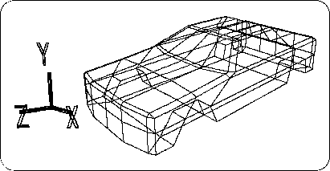
Modeling is now complete (Figure 3-82).
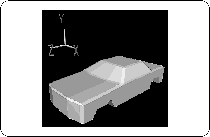
After that, you can try making bumpers, etc. using the techniques you have remembered.